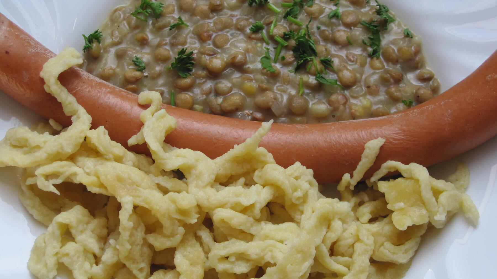

Zurück zur Übersicht
Linsen mit Spätzle und Saitenwürstle
Schwäbischer Klassiker: sämige, leicht säuerliche Linsen mit Spätzle und heißen Saitenwürstle.
- Zeit
- 60 Min.
- Schwierigkeit
- leicht
- Kategorie
- Klassiker
- Ernährung
- mit Fleischvegetarisch
Zutaten
Portionen
- 250 gTellerlinsen (z. B. Alblinsen)
- 1Zwiebel
- 1Möhre
- 100 gKnollensellerie
- 2 ELButter
- 2 ELMehl
- 1 lGemüsebrühe
- 1Lorbeerblatt
- 3 ELRotweinessig
- 1 TLSenf, mittelscharf
- 1 PriseZucker
- Salz, Pfeffer
- 600 gSpätzle, frisch aus dem Kühlregal oder selbst gemacht
- 8Saitenwürstle
Zubereitung
- Linsen in einem Sieb gründlich abspülen. Zwiebel fein würfeln, Möhre und Sellerie schälen und in kleine Würfel schneiden.
- Butter in einem Topf schmelzen und die Zwiebel darin 3 Minuten andünsten. Möhre und Sellerie dazugeben und 2 Minuten mitdünsten.
- Mehl darüberstäuben und unter Rühren hellbraun anschwitzen. Brühe nach und nach unter Rühren angießen, damit keine Klümpchen entstehen.
- Linsen und Lorbeerblatt zugeben, aufkochen und halb zugedeckt bei kleiner Hitze etwa 35 Minuten köcheln lassen, bis die Linsen weich sind. Ab und zu umrühren, bei Bedarf Wasser nachgießen.
- Saitenwürstle in einen Topf mit heißem, nicht mehr kochendem Wasser legen und etwa 8 Minuten ziehen lassen, damit sie nicht platzen.
- Spätzle nach Packungsangabe erhitzen, zum Beispiel in einer Pfanne mit etwas Butter.
- Lorbeerblatt entfernen. Linsen mit Essig, Senf, Salz, Pfeffer und Zucker abschmecken. Sie sollen deutlich säuerlich schmecken.
Tipp: Wer es deftiger mag, brät 100 g Speckwürfel mit der Zwiebel an. Linsen lassen sich gut aufwärmen, dabei etwas Wasser zugeben, weil sie nachdicken.